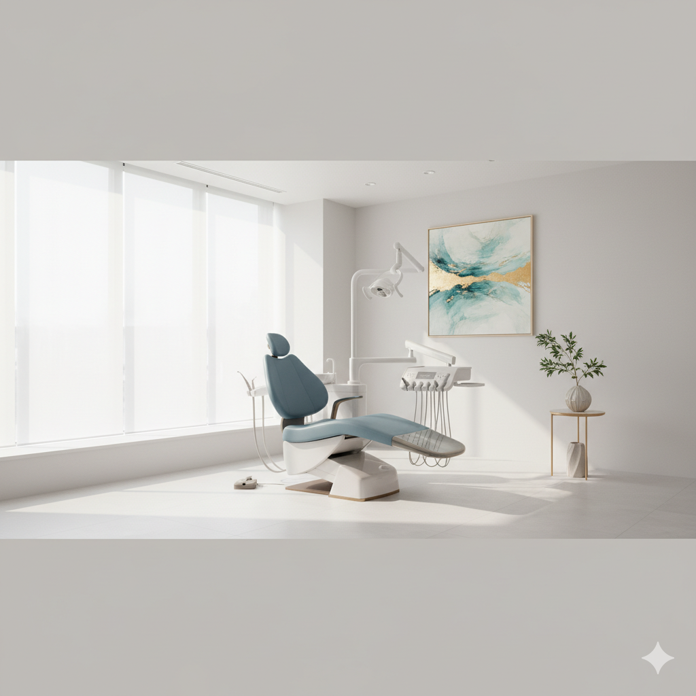
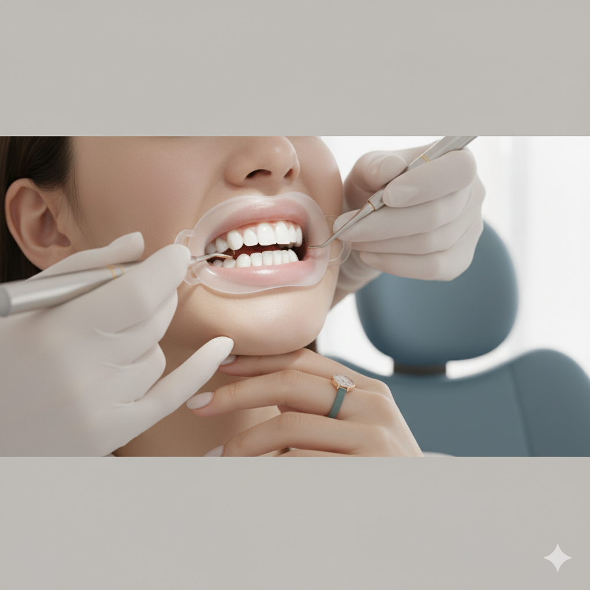
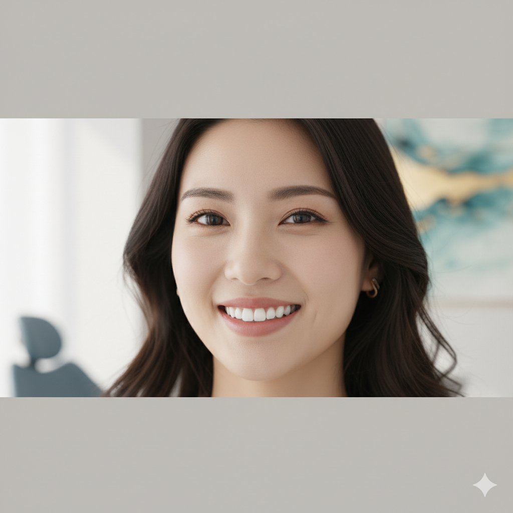
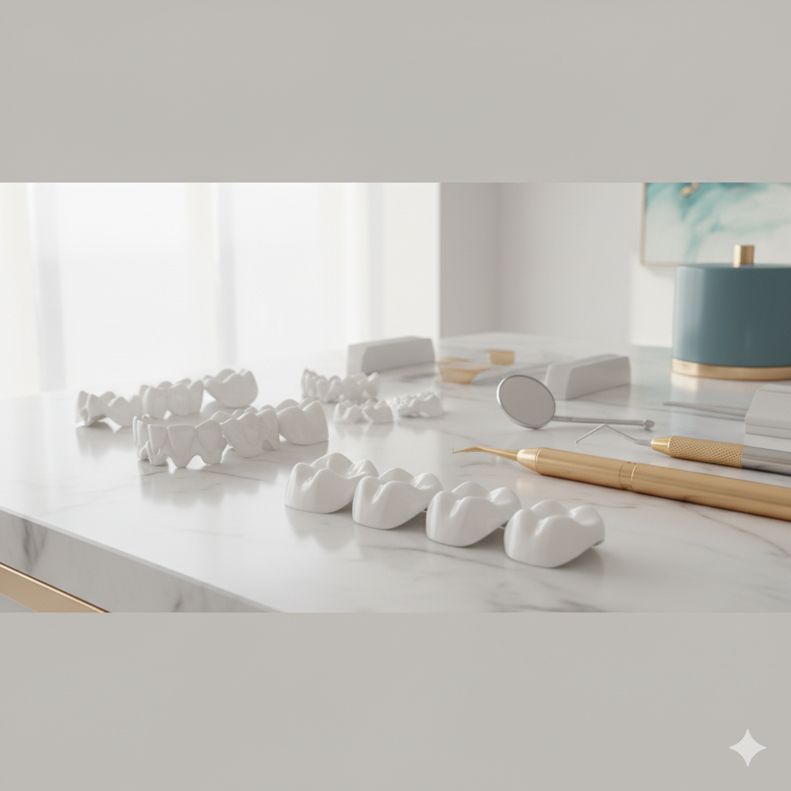
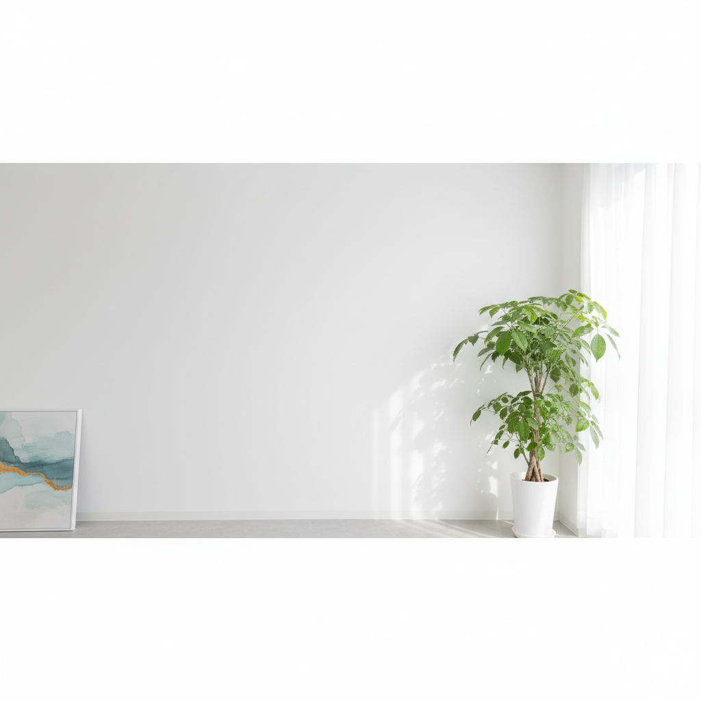

No. 01
痛みに配慮した治療
麻酔の一刺しから、できる限り痛みの少ない方法を選びます。「歯医者が苦手」という方こそ、どうぞお気兼ねなくご相談ください。

— Kyoto, since 【要確認：開業年】
痛みに配慮した、できるだけ歯を残す治療を。
そして、前歯の自然な美しさまで——
京都・河原町三条の歯科医院。
CONCEPT
痛みに配慮した治療、できるだけ歯を残す保存治療、そして自然な美しさを求める審美治療。
当院がもっとも大切にしてきた、三つの柱です。
No. 01
麻酔の一刺しから、できる限り痛みの少ない方法を選びます。「歯医者が苦手」という方こそ、どうぞお気兼ねなくご相談ください。
No. 02
ご自身の歯にまさるものはありません。「残せる歯は、最後まで残す」を基本姿勢に、保存的な治療を丁寧にご提案します。
No. 03
笑顔のときに見える前歯を、不自然にならない範囲で美しく。素材や色味まで、ご納得いただけるまでご相談を重ねます。
DIRECTOR
藤村 英典 ふじむら ひでのり
歯学博士 ／ 大阪大学歯学部 卒業
「専門性のある治療」と「気兼ねなく相談できる雰囲気」、その両立をいちばん大切にしてまいりました。 歯のお悩みは、見た目や費用のことも含めて、人には話しづらいもの。最初のご相談から、どうかご遠慮なくお聞かせください。
ESTHETIC & WHITENING
前歯の色や形が気になって、思いきり笑えない——
そんなお悩みにこそ、当院はていねいに向き合います。ご希望や、ライフスタイル、ご予算を伺いながら、もっとも自然で美しい選択肢をご提案いたします。



CASES
実際の治療例をBefore / Afterでご紹介します。
【要確認：掲載可否・症例数・適応基準】
Case 01
変色した前歯を、ご本人の自然な色味と形状に合わせて整えた症例。
【要確認】費用：000,000円〜／治療期間：約0回／主なリスク・副作用
Case 02
不自然にならない範囲での、ナチュラルな白さを目指した症例。
【要確認】費用：000,000円〜／治療期間：約0回／主なリスク・副作用
Case 03
装着時に金具が見えず、自然な見た目と装着感に配慮した症例。
【要確認】費用：000,000円〜／治療期間：約0回／主なリスク・副作用
※ 自由診療を含むため、本番では医療広告ガイドラインに沿った表記を掲載予定です。【要確認】
ACCESS
Google Map 埋め込み枠
【要確認】本番では下記住所のGoogle Maps iframeを差し込み
藤村歯科医院
〒604-8006
京都府京都市中京区河原町通三条上ル 西側
グリントランドビル 2F
診療時間
| 時間 / 曜日 | 月 | 火 | 水 | 木 | 金 | 土※ | 日祝 |
|---|---|---|---|---|---|---|---|
| 10:00 – 13:00 | ● | ● | ● | ● | ● | △ | 休 |
| 15:00 – 19:00 | ● | ● | ● | ● | ● | 休 | 休 |
| ● 診療 △ 午前のみ診療 休 休診 ※ 土曜は午前のみの診療です。第1・3・5土曜は休診（診療する土曜は月により異なります）。【要確認】 ※ 休診日：日曜・祝日・第1・3・5土曜 | |||||||
PAYMENT
クレジットカード／電子マネー対応
RESERVATION
Web ／ LINE ／ お電話

RESERVATION
お忙しい方も、初めての方も、
Web・LINEから24時間お申し込みいただけます。
【要確認】Web予約システムのURL／LINE公式アカウントID